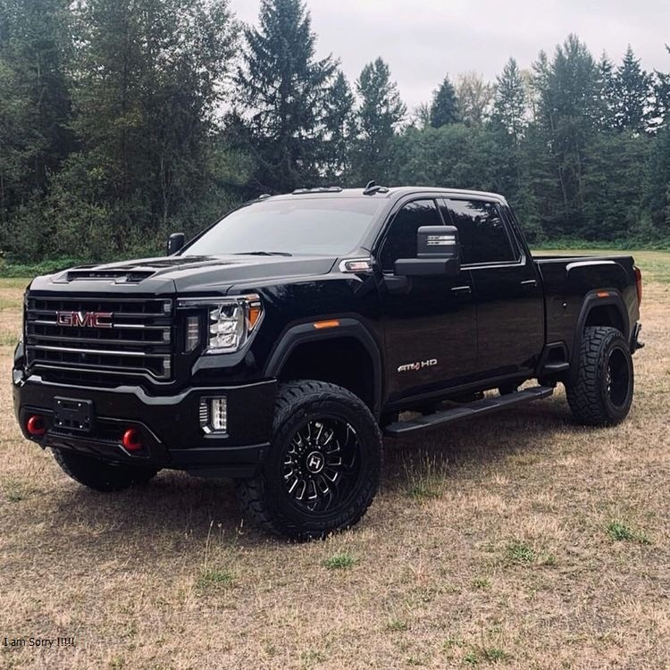

Siera
Do you have the skill – and nerve – to survive the horrors of a broken world in this massive open-world action adventure?
Step into the dirt flecked shoes of former outlaw biker Deacon St. John, a bounty hunter trying to find a reason to live in a land surrounded by death. Scavenge through abandoned settlements for equipment to craft valuable items and weapons, or take your chances with other survivors trying to eke out a living through fair trade… or more violent means.
With humanity devastated by a global pandemic and ravaged by feral creatures known as Freakers, any mistake could be your last in your attempt to carve out a new life in the hostile Pacific Northwest high-desert.
|
Denali
The year is 1274. Samurai warriors are the legendary defenders of Japan—until the fearsome Mongol Empire invades the island of Tsushima, wreaking havoc and conquering the local population. As one of the last surviving samurai, you rise from the ashes to fight back. But honorable tactics won’t lead you to victory. You must move beyond your samurai traditions to forge a new way of fighting—the way of the Ghost—as you wage an unconventional war for the freedom of Japan.
|